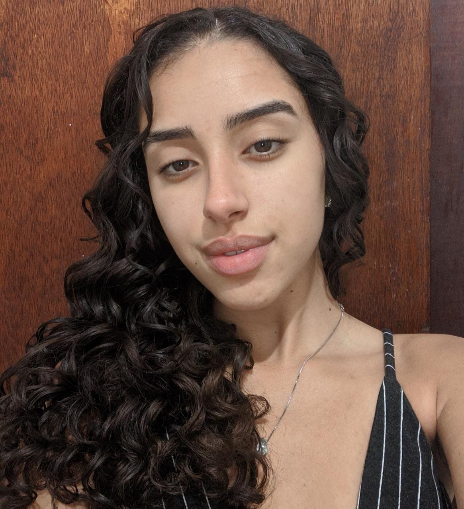

Nascimento: 18/08/2003 - 18 anos
São Paulo, São Paulo, Brasil - 05510-021
izabella.faria.ismart@gmail.com.br
(31) 9 9394-3491
Linkedin: Izabella Almeida

Objetivos:
Meus principais objetivos, ao me candidatar a essa vaga, são o desenvolvimento de
habilidades técnicas e a obtenção de habilidades socioemocionais exigidas no cargo em questão.
Bolsa integral no ensino médio, concedida pelo instituto social para motivar, apoiar e reconhecer talentos.
Graduanda no Insituto de Tecnologia e Liderança - São Paulo. São Paulo. (2022-2025)
Aprovada em quarto lugar no vestibular aplicado em 2021.
Bolsa integral, incluindo moradia e alimentação.
Competências:
Comunicação
Liderança
Trabalho em equipe
Capacidade analítica
Raciocínio lógico
Iniciativa
Cursos:
Informática básica: Micronet
Introdução à linguagem python de programação: Alura.
Economia para o ensino médio: EESP ensina.
Reconhecimentos e prêmios:
Medalha de ouro: ONHB (2021).
Medalha de prata: OBA (2021), OBA (2020)
Medalha de bronze: Trading game (2021), OBMEP (2018), OBMEP (2017), OBMEP (2016).
Menção honrosa: olimpíada tubarão de matemática (2020), olimpíada canguru (2019).
Destaques: destaque regional na olimpíada brasileira de saúde e meio ambiente (2020).
Aprovações:
Instituto de tecnologia e liderança - CIências da computação Quarto lugar. (2022)
Universidade Federal de Minas Gerais - Economia (2022)
Fundação João Pinheiro - Administração Pública (2022)
Pontíficia Universidade Católica de Minas Gerais - CIências da computação (2022)
Instituto Mauá de Tecnologia - Engenharia da Computação Sexto lugar. (2022)
Idiomas:
Inglês intermediário.
Alemão básico.
Espanhol básico.
Experiência:
Mentora de educação financeira (2021)
Atuei como mentora no módulo de educação financeira no curso oferecido pela plataforma Demostudo (2021).
Mestre de cerimônia (2019)
Fui convidada para apresentar a segunda edição do café com profissional promovido pelo Ismart.
Delegada SISA (2020)
Participei da oitava Simulação do Santo Antônio (SISA VIII) como delegada na agência de comunicações.
Projetos:
Terapia de abraços.
Projeto social feito em asilos, voltado para idosas com alzheimer.
Divercity.
Jogo realizado durante 10 semanas, em parceria com a empresa Ambev com o objetivo de promover diversidade e inclusão dentro da empresa.